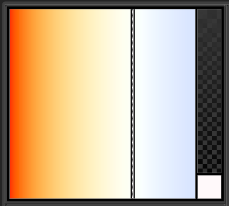

Colormodel kelvin¶
Colormodel_kelvin is a basic example plugin. This wiki page is intended as a walkthrough of the code in order to help you better understand the SDK.
When installed, this plugin adds a color model that enables picking colors using a Kelvin color temperature component.
The Kelvin color model
Code Walkthrough¶
Class Declarations¶
kelvincolormodel.h
There are two class declarations here. The first function inherits from FAQ#Q:_How_do_I_write_to_the_log.3F but with an added Luxology copyright. Inside the class we have a CKelvinColorModelLog which defines what we will actually be writing out to the log. An object of this type is defined in our CKelvinColorModel class so it writes out to the log when the server dependent on it is used.
The second function inherits from Color_(lx-color.hpp)#ILxColorModel description so we can create some server tags, which indicate to Modo certain information about the server.
The rest of the functions(except for the last two) in the CKelvinModel are redeclarations of function present in CLxImplColorModel, which we inherited from. How CLxImplColorModel works is it defines a bunch of functions, but then indicates that it will not be implementing them. By redeclaring them, we indicate that we want to customize whatever that function affects. For example, we redeclare the function colm_ComponentType here and then later in the definition indicate that the component type of our color model will be float.
The last two functions query the user for the max and min values of the color model.
1 2 3 4 5 6 7 8 9 10 | class CKelvinColorModelLog : public CLxLuxologyLogMessage
{
...
};
class CKelvinColorModel :
public CLxImpl_ColorModel
{
...
};
|
./Server_Tags¶
Servers tags are examined when the server is initialized, and give information about the server. We set the tags in this case by taking a descinfo[] array and associating the relevant data with the corresponding flags.
This function here declares some basic information about the server.
1 2 3 4 5 6 7 | LXtTagInfoDesc CKelvinColorModel::descInfo[] = {
{ LXsLOD_CLASSLIST, LXa_COLORMODEL },
{ LXsSRV_USERNAME, "Kelvin" },
{ LXsSRV_LOGSUBSYSTEM, "kelvin-color-model" },
{ LXsCOLORMODEL_VALUEPRESET, "0:kelvin" },
{ 0 }
};
|
./Initialize_(index)¶
Servers are extensible set of features that we add to modo, usually through plugins. Intialize is called when we add the plugin to modo, and is the utility that exports the server. The LXx_ADD_SERVER method is simply a wrapper that is identical to normal method of adding a server, with the arguments being (interface_to_be_added, class_you_depend_on, server_name).
In this case we add the ColorModel interface, depend upon the CKelvinColorModel class, and name our server kelvin_color_model.
1 2 3 4 5 | void
initialize ()
{
LXx_ADD_SERVER (ColorModel, CKelvinColorModel, "kelvin_color_model");
}
|
Helper Functions¶
This is a helper function that queries the user for a value. It is later called in the MaxTemp and MinTemp functions.
1 2 3 4 5 | static int
GetUserInt (const char *prefKey, int defaultValue = 0)
{
...
}
|
These are helper functions that query the user for the max and min values of the temperature of the graph. To query the user, this function calls the GetUserInt function. These functions are themselves called in a function that set the constants that govern the range of components in the graph and functions that draw slices of the graph.
1 2 3 4 5 6 7 8 9 10 11 | unsigned
CKelvinColorModel::MinTemp () const
{
...
}
unsigned
CKelvinColorModel::MaxTemp () const
{
...
}
|
Implementations¶
This function calculates imgX and imgY in (0..imgW, 0..imgH), from hsv color components on the plane specified by xAxis, yAxis.
1 2 3 4 5 6 7 8 9 10 11 12 | LxResult
CKelvinColorModel::colm_ToSlicePos (
unsigned xAxis,
unsigned yAxis,
unsigned imgW,
unsigned imgH,
const float *kelvin,
unsigned *imgX,
unsigned *imgY)
{
...
}
|
This function calculates color model components hsv using imgX and imgY in [0, 1], on the plane specified by xAxis, yAxis. NOTE: The other axis (the one that is neither x nor y) component value should already be set by the last bar selection or the initial color load.
1 2 3 4 5 6 7 8 9 10 11 12 13 | LxResult
CKelvinColorModel::colm_FromSlicePos (
unsigned xAxis,
unsigned yAxis,
unsigned imgW,
unsigned imgH,
unsigned imgX,
unsigned imgY,
float *downVec,
float *kelvin)
{
...
}
|
This function returns a clean vector so the color picker can drawn the horizontal strip properly. For hue, this is 0,1,1, for saturation we set the value to 1 but leave the rest alone,, and for value it’s always 0,0,0.
1 2 3 4 5 6 7 8 | LxResult
CKelvinColorModel::colm_StripBaseVector (
unsigned axis,
int dynamic,
float *kelvin)
{
...
}
|